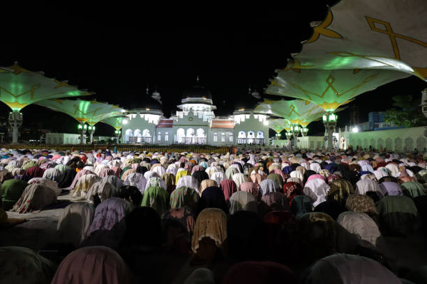
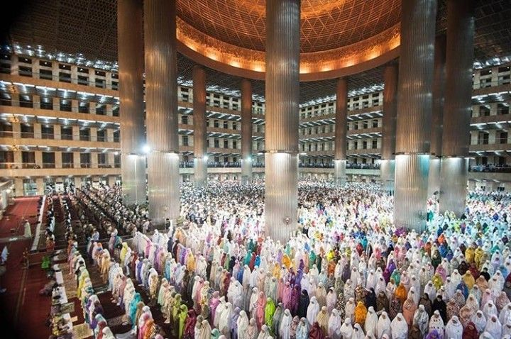
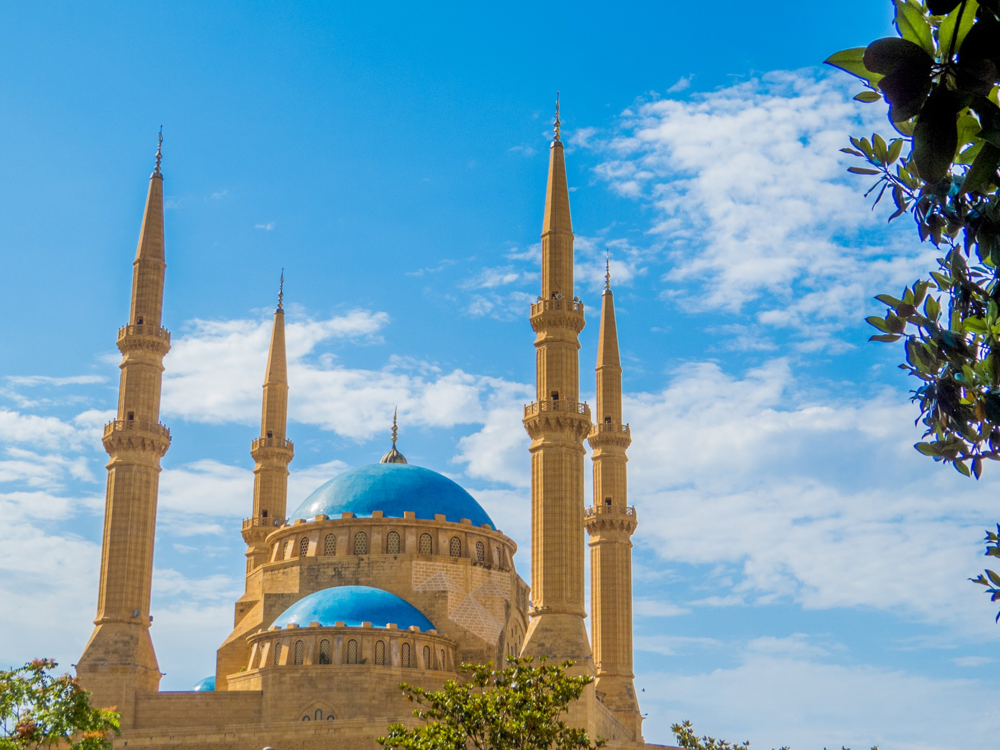
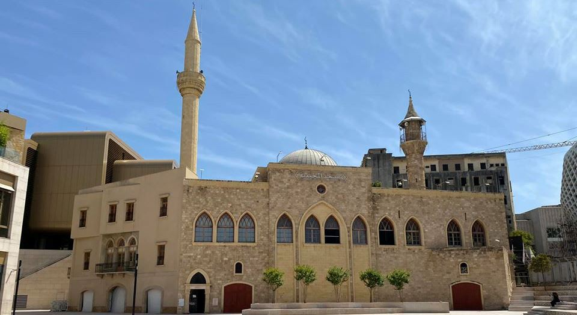

Tarawih
Tarawih,
are special Sunnah prayers
involving reading long portions of the Quran,
and performing many rakahs,
which are performed only in the Islamic month of Ramadan.

What is the purpose of Taraweeh?
It provides us a chance to connect with Allah,
seek His forgiveness and strengthen our imaan (faith)

Mosques You Can Pay Tarawih During Ramadan in Lebanon

AL Amin

Al Majidiya